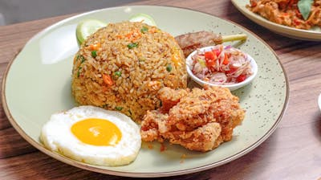

Nasi Goreng Spesial

Nasi goreng dengan bumbu rempah pilihan.
Kuliner Nusantara dengan Cita Rasa Tradisional
Kami percaya bahwa kualitas bahan adalah kunci dari setiap hidangan. Oleh karena itu, kami hanya menggunakan bahan segar dari petani lokal.
Restoran Sederhana hadir sejak tahun 2020 dengan misi menyajikan masakan Indonesia autentik kepada setiap pengunjung.
Kami percaya bahwa cita rasa tradisional tidak perlu rumit untuk dinikmati.